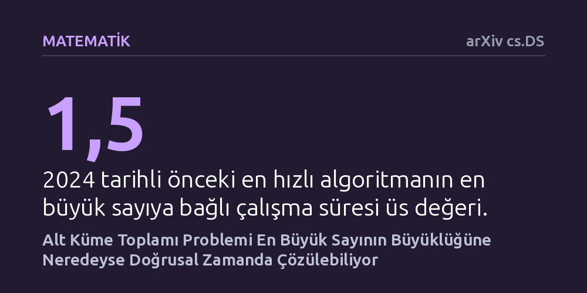

MATEMATIK · arXiv cs.DS · 2026-10-17
Araştırmacılar, bilgisayar biliminin klasik zorluklarından alt küme toplamı probleminin daha hızlı çözülüp çözülemeyeceğini araştırdı. Geliştirilen yeni deterministik algoritma sayesinde problem, kümedeki en büyük sayının değerine neredeyse doğrusal bir sürede çözüme kavuşturuldu.
On yıllardır pratik olarak çözülmesi imkânsız kabul edilen zor bir matematiksel problemin, sayıların büyüklüğü sınırlandığında teorik sınırlara kadar hızlandırılabileceğini gösteriyor.

Bilgisayar biliminin en köklü ve ünlü problemlerinden biri olan alt küme toplamı (Subset Sum), ilk bakışta oldukça masum görünen bir soru sorar: Elinizde bir grup tam sayı ve bir hedef sayı varken, bu sayıların içinden öyle bir alt grup seçebilir misiniz ki toplamları tam olarak hedefe eşit olsun? Örneğin bir çantaya belirli ağırlıklardaki eşyaları tam kapasiteyi dolduracak şekilde yerleştirmeye ya da bir bütçeyi belirli harcama kalemleriyle kuruşu kuruşuna denkleştirmeye benzer. Sayı adedi azken bu işlem deneme yanılmayla kolayca çözülebilir; ancak sayı adedi arttıkça olası kombinasyonların sayısı üstel olarak patlar ve en güçlü süper bilgisayarlar bile tüm olasılıkları tek tek denemekte yetersiz kalır.
Bu problem, hesaplama karmaşıklığı teorisinde 'NP-tam' olarak adlandırılan zor problemler sınıfının merkezinde yer alır. Finansal optimizasyondan lojistik planlamaya, kriptografik güvenlik protokollerinden endüstriyel kaynak tahsisine kadar pek çok kritik alanda alt küme toplamının verimli şekilde çözülmesi hayati bir ihtiyaçtır. Araştırmacılar yıllardır problemin genel durumdaki zorluğunu aşamayacaklarını bildiklerinden, sayılar belirli bir büyüklük sınırı içinde kaldığında çözümün ne kadar hızlandırılabileceğini anlamaya odaklanmıştır.
Bu çalışma bir laboratuvar deneyi, hasta verisi analizi ya da bilgisayar simülasyonu içermez. Elde edilen bulgu, kuramsal bilgisayar bilimi ve ayrık matematiğin derin araçlarının bir araya getirilmesiyle inşa edilmiş titiz bir matematiksel kanıta dayanır. Yazarlar, problemin çözüm süresini kısaltmak için rastgele tahminlere ya da yaklaşık sonuçlara sığınmak yerine, her zaman kesin ve doğru sonucu garanti eden deterministik bir yöntem kurgulamayı hedeflemiştir.
Bunu başarmak için araştırmacılar iki temel kuramsal yaklaşımı ustalıkla birleştirdi. İlk olarak, Conlon, Fox ve Pham tarafından 2023 yılında ortaya konan ve alt küme toplamlarının cebirsel yapısını inceleyen ters teorem sonuçlarından faydalandılar. İkinci olarak, geometrik çokyüzlü yaklaşıklama literatüründe yer alan ekonomik örtme tekniklerinin özel bir bölüm varyantını geliştirdiler. Bu sayede, aranacak sayı kombinasyonlarının uzayını son derece verimli bir şekilde bölümlere ayırarak gereksiz hesaplama adımlarını matematiksel kesinlikle elediler.
Çalışmanın temel bulgusu, alt küme toplamı probleminin en büyük sayının büyüklüğüne neredeyse doğrudan orantılı bir sürede çözülebileceğini ispatlamasıdır. Formel olarak ifade etmek gerekirse yazarlar, problemin çözüm süresini girdi boyutu ile en büyük sayının neredeyse doğrusal bir fonksiyonu seviyesine indirmeyi başarmıştır. Bu sonuç, Chen, Lian, Mao ve Zhang tarafından 2024 yılındaki SODA konferansında sunulan önceki en hızlı algoritmayı belirgin biçimde geride bırakmaktadır.
Elde edilen bu çalışma süresi, bilgisayar biliminde neredeyse doğrusal olarak adlandırılır; yani problem boyutu büyüdükçe gereken işlem sayısı neredeyse sayının büyüklüğü kadar artar ve fazladan üssel bir ceza ödenmez. Daha da önemlisi bu algoritma deterministiktir; yani şansa, rastgele sayı üretimine veya olası hata paylarına bağlı kalmaksızın her zaman doğru alt kümeyi bulur. Yazarlar ayrıca, kuramsal bilgisayar bilimindeki Güçlü Üstel Zaman Hipotezi doğru kabul edildiğinde, bu bağımlılığın teorik olarak ulaşılabilecek en sıkı sınıra ulaştığını ortaya koymuştur.
Bu gelişme, zor hesaplama problemlerinin doğası hakkındaki anlayışımızı pekiştirmektedir. On yıllardır en kötü senaryoda çözülmesi olanaksız görünen bir bulmacanın, girdideki sayıların mutlak büyüklüğü kontrol altında tutulduğunda teorik olarak mümkün olan en yüksek hızda çözülebileceği kanıtlanmış oldu. Geometrik çokyüzlü yaklaşımlarının cebirsel toplam problemlerine uygulanabilmesi, algoritmalar dünyasında benzer zor problemlerin çözümü için de yepyeni bir kuramsal alet çantası sunmaktadır.
Bununla birlikte, makalenin henüz bağımsız uzmanlarca incelenmemiş bir önbaskı olduğunu unutmamak gerekir. Kuramsal ispatların hakem sürecinde adım adım doğrulanması, bu sonucun kesinleşmesi için ilk ve en kritik aşamadır. Matematiksel kanıt onaylandığı takdirde, bu çalışma algoritmalar teorisinde temel bir başvuru kaynağı haline gelecek ve kombinatoryal optimizasyon alanında yeni araştırmaları tetikleyecektir.